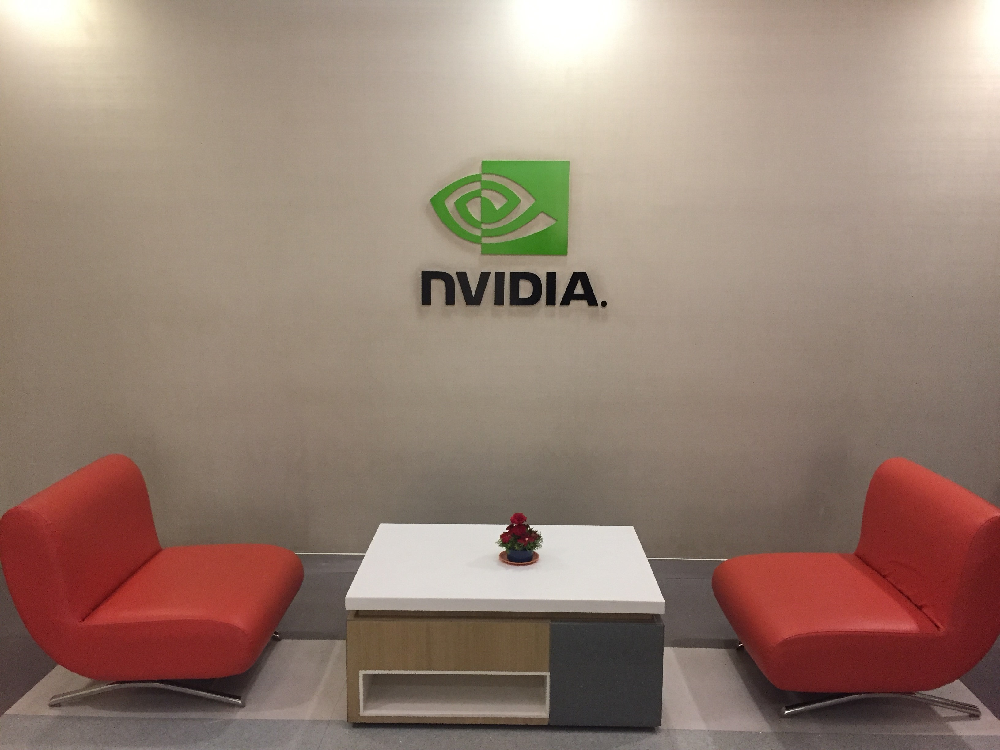
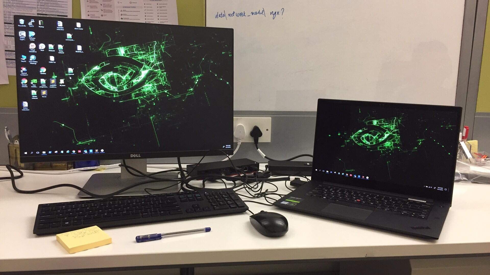
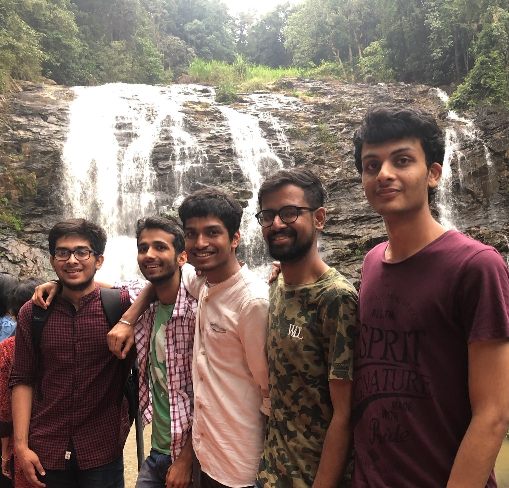
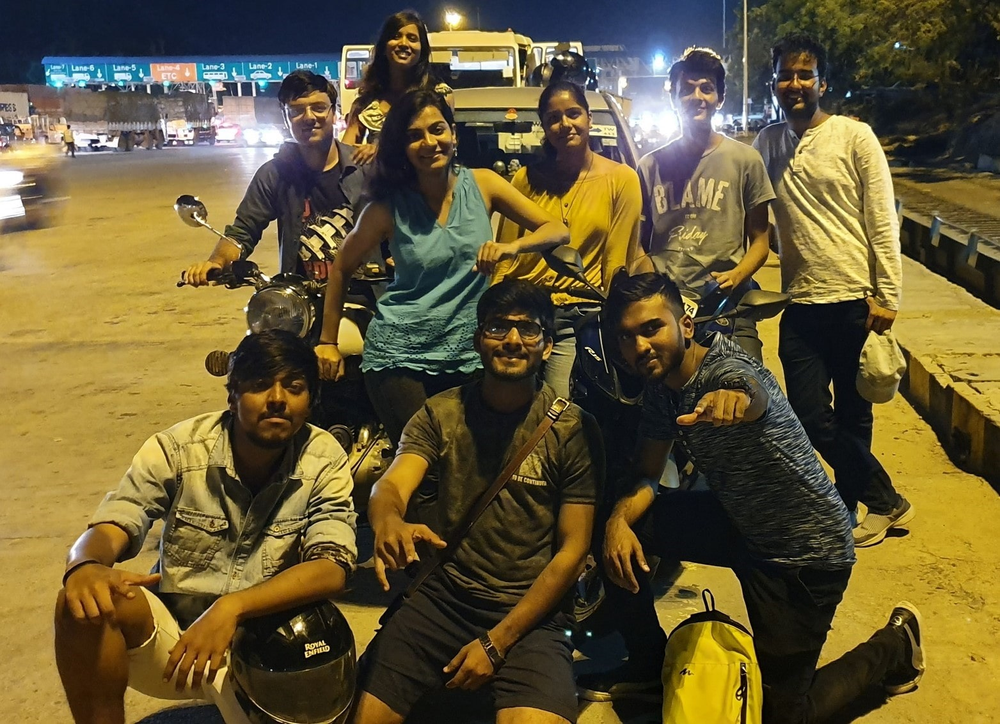

Hey everyone! I interned at NVIDIA, Bangalore during this summer and would like to share my experience. People have a prejudice that NVIDIA implies "Graphics" which is not true. Over the last decade, NVIDIA has focused its interest in a variety of fields like self-driving cars, real-time ray tracing, special-purpose CPUs, of course AI and some more areas.

Project Allocation
There are a lot of exciting projects which the company plans to give out to the summer interns. But the sad part is that you don't get to choose the project of your interest and it is entirely possible that the allotted project doesn't align with your interest/skills. For example, one of my co-interns was allotted a project on graphics and deep learning contrary to the fact that he had no experience even on the lowest scale in that topic.
My Work
The topic of my project was "Performance Estimation Using Deep Learning Simulator" and my work was on this simulator which is a purely software-based tool that does not any task on actual hardware but models it. The hardware of concern here is single and multi-GPU topologies. The motivation behind this simulator is to estimate the time, hardware resources, throughputs, efficiencies etc. that would be required for the training/inferencing of the neural network.
I had to run several simulations, analyze the detailed report which popped out then dive into the specific tasks and their modelling to verify if the numbers agreed with what was seen on silicon. And at some point, if the numbers were too off then I worked on improving the modelling after referring to several texts.
Work Culture
NVIDIA nurtures a quite open work culture. There is nothing like "fixed/minimum" number of work hours per day instead it is anytime come and anytime go policy.
Each intern was allotted a mentor, whom he/she could approach anytime for any doubt and a manager, with whom there used to be a weekly sync-up meet. Of course, the other team members could also be approached and they would be really cooperative and helpful.
I had a good corporate experience about what I had expected before joining because in NVIDIA, apart from the workload, an intern was treated no differently than an employee. I used to have one to one meetings with a regular employee in Shanghai, right from the second week of joining and he was always very responsive.
Facilities Provided
NVIDIA provided an entire two months stay at a hotel about 4 km from the office but this was just for the interns. To and fro travel service, lunch (not good though) and evening snacks is provided free of cost to all the employees. Of course, a pantry which many times I would visit just hoping to find another co-intern to cut some time :P.
NVIDIA believes in the best and efficient quality of work and that tangibles should never be the limiter. So, it tries to provide the latest laptop to everyone, extended displays as required and also an "ergonomically" designed chair to minimize stress from sitting for too long.

Life outside the Office
My office routine was 9 am (making use of the free travel service) to 5.30 pm and sometimes 8:30 pm (if work lagged). I and my friends used to go out just for dinner on weekdays. Since dinner had to be self-arranged, we preferred to go out and try different cuisines every day because there were plenty of restaurants (with Zomato Gold :P) at walking distance from the hotel.
There aren't many good places to visit in Bangalore but some places like Cubbon Park, Samsung Opera House are worth a visit. Also, a visit to Nandi Hills early in the morning is justifiable.
Most of my weekends were spent doing get-togethers with different groups of friends. Other activities would include going to a mall, bowling, movies or a faraway restaurant.
I spent one entire weekend going to Coorg, a hill-station kind of place about 250km from Bangalore on the west.

I went on a road trip for a day to Hogenakkal Falls with co-interns on one of the weekends.

Farewell
The HR took all the interns to Smaaash for bowling, dancing and then for dinner. Apart from a common outing, almost every team (with mostly one intern) used to go out for lunch.
I think the overall experience was great and satisfying. NVIDIA is a great company to work in.